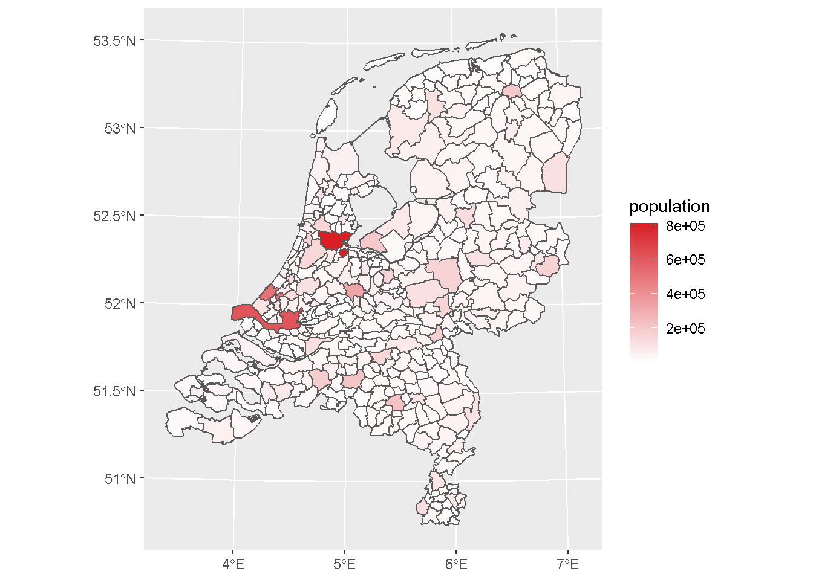

RCO R Style Guide
Brian Froeb
7/27/2020
Templetes
Difference Between Groups
Of the 3 divergent color schemes the “blue to orange” color scheme highlights the differences between groups better than the “red to brown” ad the “teal to brown” color schemes.
ggplot(iris, aes(Sepal.Width, Sepal.Length, color = Species)) +
geom_point(size = 4) +
scale_color_rco(palette = "blue to orange")ggplot(iris, aes(Sepal.Length, fill = Species)) +
geom_dotplot() +
scale_fill_rco(palette = "blue to orange")## `stat_bindot()` using `bins = 30`. Pick better value with `binwidth`.ggplot(iris, aes(Sepal.Width, Sepal.Length, color = Species)) +
geom_point(size = 4) +
scale_color_rco(palette = "red to brown")ggplot(iris, aes(Sepal.Length, fill = Species)) +
geom_dotplot() +
scale_fill_rco(palette = "red to brown")## `stat_bindot()` using `bins = 30`. Pick better value with `binwidth`.ggplot(iris, aes(Sepal.Width, Sepal.Length, color = Species)) +
geom_point(size = 4) +
scale_color_rco(palette = "teal to brown")ggplot(iris, aes(Sepal.Length, fill = Species)) +
geom_dotplot() +
scale_fill_rco(palette = "teal to brown")## `stat_bindot()` using `bins = 30`. Pick better value with `binwidth`.Divergent Values
Of the 3 divergent color schemes the “teal to brown” color scheme highlights the diverging values better than the “red to brown” ad the “teal to brown” color schemes.
ggplot(iris, aes(Sepal.Width, Sepal.Length, color = Sepal.Length)) +
geom_point(size = 4) +
scale_color_rco(discrete = FALSE, palette = "blue to orange")
ggplot(iris, aes(Sepal.Width, Sepal.Length, color = Sepal.Length)) +
geom_point(size = 4) +
scale_color_rco(discrete = FALSE, palette = "red to brown")ggplot(iris, aes(Sepal.Width, Sepal.Length, color = Sepal.Length)) +
geom_point(size = 4) +
scale_color_rco(discrete = FALSE, palette = "teal to brown")However the reversed version of the “Red to Brown” provides a decent color scheme for highlighting increasing values of a single variable. This should be used when all values in the data are greater than 0
ggplot(iris, aes(Sepal.Width, Sepal.Length, color = Sepal.Length)) +
geom_point(size = 4) +
scale_color_rco(discrete = FALSE, palette = "red to brown", reverse = TRUE)Single Color Ramps
The three single color ramps are more appropriate for increasing values where the lowest values are zero or close to zero. They should generally only be used with geographic data.
ggplot(NLD_muni) +
geom_sf(aes(fill = population)) +
scale_fill_rco(palette = "blue_ramp", discrete = FALSE, reverse = TRUE)ggplot(NLD_muni) +
geom_sf(aes(fill = population)) +
scale_fill_rco(palette = "red_ramp", discrete = FALSE, reverse = TRUE)
ggplot(NLD_muni) +
geom_sf(aes(fill = population)) +
scale_fill_rco(palette = "teal_ramp", discrete = FALSE, reverse = TRUE)If the lowest values are not close to zero the Reversed “Brown to Red” Palette should be used
ggplot(NLD_muni) +
geom_sf(aes(fill = population)) +
scale_fill_rco(palette = "red to brown", discrete = FALSE, reverse = TRUE)